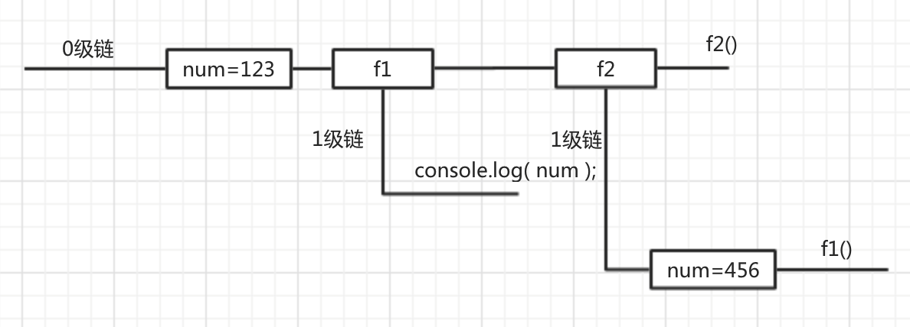

作用域链
什么是作用域链
只有函数可以制造作用域结构， 那么只要是代码，就至少有一个作用域, 即全局作用域。
凡是代码中有函数，那么这个函数就构成另一个作用域。如果函数中还有函数，那么在这个作用域中就又可以诞生一个作用域。
将这样的所有的作用域列出来，可以有一个结构: 函数内指向函数外的链式结构。就称作作用域链。
例如：
function f1() {
function f2() {
}
}
var num = 456;
function f3() {
function f4() {
}
}

绘制作用域链的步骤:
- 看整个全局是一条链, 即顶级链, 记为 0 级链
- 看全局作用域中, 有什么成员声明, 就以方格的形式绘制到 0 级练上
- 再找函数, 只有函数可以限制作用域, 因此从函数中引入新链, 标记为 1 级链
- 然后在每一个 1 级链中再次往复刚才的行为
变量的访问规则
- 首先看变量在第几条链上, 在该链上看是否有变量的定义与赋值, 如果有直接使用
- 如果没有到上一级链上找( n - 1 级链 ), 如果有直接用, 停止继续查找.
- 如果还没有再次往上刚找... 直到全局链( 0 级 ), 还没有就是 is not defined
- 注意,同级的链不可混合查找
练习：绘制作用域链
function f1() {
var num = 123;
function f2() {
console.log( num );
}
f2();
}
var num = 456;
f1();

如何分析代码
- 在分析代码的时候切记从代码的运行进度上来分析, 如果代码给变量赋值了, 一定要标记到图中
- 如果代码比较复杂, 可以在图中描述代码的内容, 有事甚至需要将原型图与作用域图合并分析
练习
var num = 123;
function f1() {
console.log( num );
}
function f2() {
var num = 456;
f1();
}
f2();

补充
声明变量使用var, 如果不使用var声明的变量就是全局变量( 禁用 )
因为在任何代码结构中都可以使用该语法. 那么再代码维护的时候会有问题. 所以除非特殊原因不要这么用.
下面的代码的错误
function foo () {
var i1 = 1，
// 局部
i2 = 1,
// 全局
i3 = 3;
// 全局
}
此时注意
var arr = [];
for ( var i = 0; i <10; i++ ) {
arr.push( i );
}
for ( var i = 0; i <10; i++ ) {
console.log( arr[ i ] );
}
// 一般都是将变量的声明全部放到开始的位置, 避免出现因为提升而造成的错误
var arr = [],i = 0;
for ( ; i <10; i++ ) {
arr.push( i );
}
for ( i = 0; i <10; i++ ) {
console.log( arr[ i ] ); // undefined
}